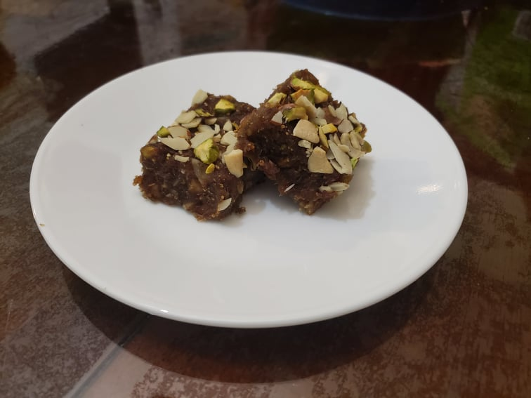

Anjeer Barfi

Ingredients:
- 3/4 cup Dried figs, chopped
- 3/4 cup Dried dated, pitted and chopped
- 3 tbsp Water, or as needed
- 3/4 cup Mixed nuts: Almonds, Walnuts, Cashews, and/or Pistachios
- 1-3 tsp Ghee
- 1/8 tsp Cardamom powder
- 1/8 tsp Cinnamon
Instructions:
- In a medium pan over medium heat, dry roast the nuts until crunchy. Set aside into a separate plate and reserve.
- Over medium to medium-low heat, add the figs to the pan with the water. Cook until soft, adding water if needed.
- Reduce the heat to low and add the dates, cinnamon, and cardamom powder. Stir constantly until it becomes mushy and sticky, about 3-4 minutes. As it becomes sticky, mix in the ghee. Mash together until it becomes a thick paste and is no longer soggy.
- Add the nuts and mix until well combined. Remove from the pan and place into a greased brownie tray and mold it into a rectangle. Once cooled, cut it into squares and serve.